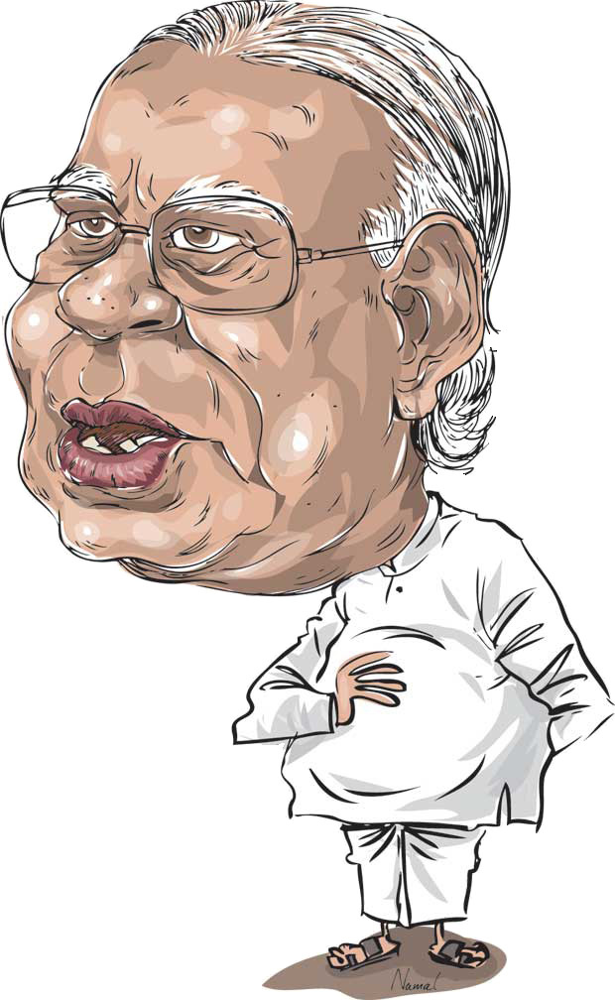

Sampanthan's Extended Use of State House and Cars Sparks Controversy
Sampanthan's Extended Use of State House and Cars Sparks Controversy
Jaffna Monitor
hellojaffnamonitor@gmail.com
6
Sampanthan's Extended Use
of State House and Cars
Sparks Controversy
Mr Sampanthan and his relatives continue to
reside in the accommodation provided to him
during his service as the Opposition Leader
from 2015 to 2019. His extended stay in the
government residence raises concerns about
the potential misuse of the entitlements
and advantages afforded to high-
ranking officials. The annual cost of
utilities and maintenance for the
house, which runs into hundreds
of thousands of rupees, is a
financial burden on the taxpayers.
Moreover, according to civil service
insiders, the two vehicles allotted for
his official use as Opposition Leader
are reportedly still being used for
personal and familial purposes.
Critics often point out Mr Sampanthan's questionable
discernment in people, highlighting his controversial
decision to nominate the former Supreme Court
Judge C.V. Wigneswaran for Chief Minister of the
Northern Provincial Council, despite significant
internal resistance from the TNA. This move proved
to be detrimental, affecting not just the functioning of
the Provincial Council but also tarnishing the TNA's
image and standing both within the local community
and beyond.
Secret Ballot, Open Comedy
The TNA's pledge of unity under Mr Sampanthan's
leadership took a comedic turn in the secret ballot for
the president. Despite a public declaration to back Dullas
Alahapperuma, some TNA parliamentarians played a game
of political 'Guess Who?', casting votes for the then-Prime
Minister Ranil Wickremesinghe instead. Wickremesinghe,
in a moment of presidential banter during his first meeting
with the TNA, quipped, “I know some of you voted for
me.” The TNA's internal coherence has since seemed like a
political sitcom, unravelling even further for all to see.
Sampanthan's Oversight: Tamil
Demands and Yahapalana
Disappointments
Sampanthan has faced significant criticism both locally and
internationally for his performance as the Leader of the
Opposition. He is charged with failing to address or influence
any substantial national matters affecting all communities.
There were allegations that he was overly accommodating to
the then-governing Yahapalana coalition rather than
asserting the interests of his constituents.
Despite playing a pivotal role in orchestrating a
united front of opposition parties that led to the
ousting of the formidable President Mahinda
Rajapaksa in 2015, Sampanthan did not manage
to secure a resolution for Tamil demands from the
succeeding Yahapalana government. In retrospect,
he may recognize the missed opportunity for
more robust negotiations, such as leveraging the
threat of toppling the government by opposing
critical measures, like the budget, to fulfil
his party's objectives. His reserved stance
ultimately led to the Tamil community
receiving little to no concessions. This
perceived strategic and tactical deficit was
starkly highlighted four years on, resulting in
the TNA facing a significant backlash from the
Tamil electorate in the 2020 elections.
Judgment in Jeopardy
Sampanthan's Leadership
Falters as TNA Fragments
Sampanthan's tenure as Leader was marked
by his inability to maintain solidarity within
the Tamil National Alliance (TNA), as critical
groups such as the Ceylon Tamil Congress
(CTC) and the Eelam People’s Revolutionary
Liberation Front (EPRLF), as well as prominent
figures like Mr C.V. Wigneswaran, distanced
themselves. The subsequent formation of
the Democratic TNA (dTNA) has effectively
isolated ITAK and underscored Mr.
Sampanthan's ineffective leadership. This has
not only weakened the TNA's political front but
also signalled a missed opportunity to advance
the Tamil cause under his stewardship.
